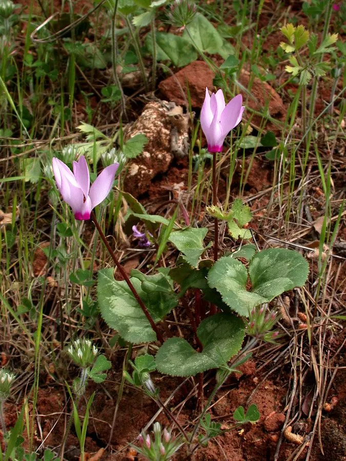

花卉与草本 · 植物界
仙客来 Cyclamen persicum

报春花科多年生球根草本，花瓣上翻如兔耳，冬春开花，是圣诞节与春节的年宵花代表，原产地中海东部。
- 分类
- 门被子植物门纲木兰纲目杜鹃花目科报春花科属仙客来属
- 栖息环境
- 地中海东部的林下与岩石坡地，喜凉爽、湿润、半阴
- 地理分布
- 原产地中海东部，现世界各地广泛盆栽，中国各地年宵花市常见
- 保护级别
- 暂无评估
物种志
仙客来为报春花科仙客来属多年生球根草本，株高 20–30 厘米，地下具扁球形块茎。叶片心形至肾形，表面有银白色斑纹，叶柄长。花单生，花梗自块茎抽出，花瓣 5 枚、向上翻卷，形似兔耳，有红、粉、白、紫等色，花期 10 月至翌年 4 月；果实为蒴果，花后花梗卷曲。
仙客来原产地中海东部，喜凉爽、湿润和半阴的环境，夏季高温时块茎休眠，秋凉后重新萌芽，冬季开花。它花形奇特、花色艳丽，是圣诞和春节期间重要的年宵花，盆栽摆放在室内明亮处即可长期观赏。栽培时浇水不宜淋在块茎和叶心，否则容易腐烂；花后花梗会卷曲把种子推向土面，这是它传播种子的一种方式。
形态与习性
- 株高20–30 厘米，具扁球形块茎
- 花期10 月至翌年 4 月
- 果期花后结蒴果，花梗卷曲
- 光照喜明亮散射光，忌强光
- 水分喜湿润，忌淋湿块茎和叶心
- 土壤疏松透气、排水良好的腐殖质土
- 繁殖以播种为主
- 主要用途年宵花、室内盆栽观赏
趣味知识
- 仙客来的花瓣向上翻卷，形似兔耳，因此别称“兔耳花”。
- 花后花梗会卷曲，把种子推向土面，便于种子传播。
- 仙客来夏季高温时块茎休眠，秋凉后才重新萌芽。
- 浇水时若淋湿块茎和叶心，容易导致腐烂，应沿盆边浇水。